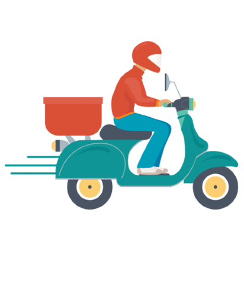

- Experience the epitome of culinary convenience with our restaurant's exemplary delivery service. A beacon of reliability, our delivery team takes pride in ensuring your dining experience transcends the boundaries of our establishment and reaches you with unparalleled efficiency. Our commitment to excellence shines through in every aspect of our delivery service. From the moment you place your order, expect a seamless and user-friendly interface that caters to your preferences. Timeliness is our hallmark; our dedicated delivery personnel strives to deliver your favorite dishes to your doorstep promptly, preserving the freshness and flavors that make our cuisine exceptional. Embracing a customer-centric philosophy, we prioritize the safety and satisfaction of our patrons. Our packaging is not just about preserving the temperature; it's a testament to our dedication to presenting each dish with the same care and attention to detail as you would find in our restaurant. Beyond the delicious cuisine, our delivery service embodies the spirit of convenience and excellence. Whether you're craving a gourmet feast or a quick bite, our delivery service ensures that the gastronomic delights from our kitchen are just a click away, promising an experience that transcends expectations. Trust us to bring the restaurant's signature flavors to your doorstep, making dining in an indulgence to savor.